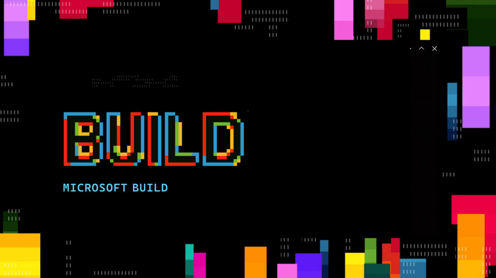
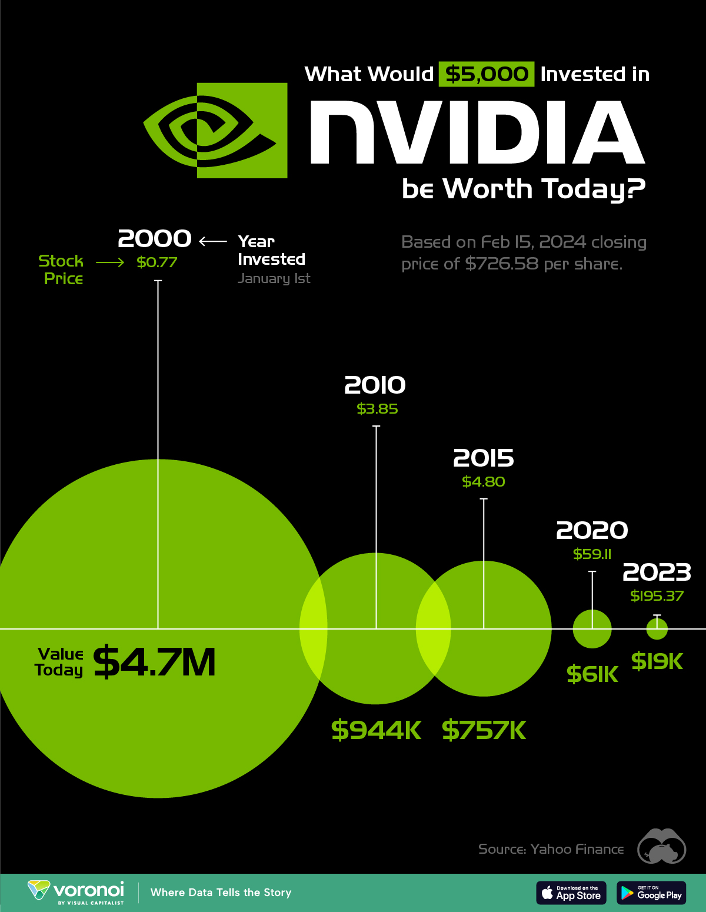
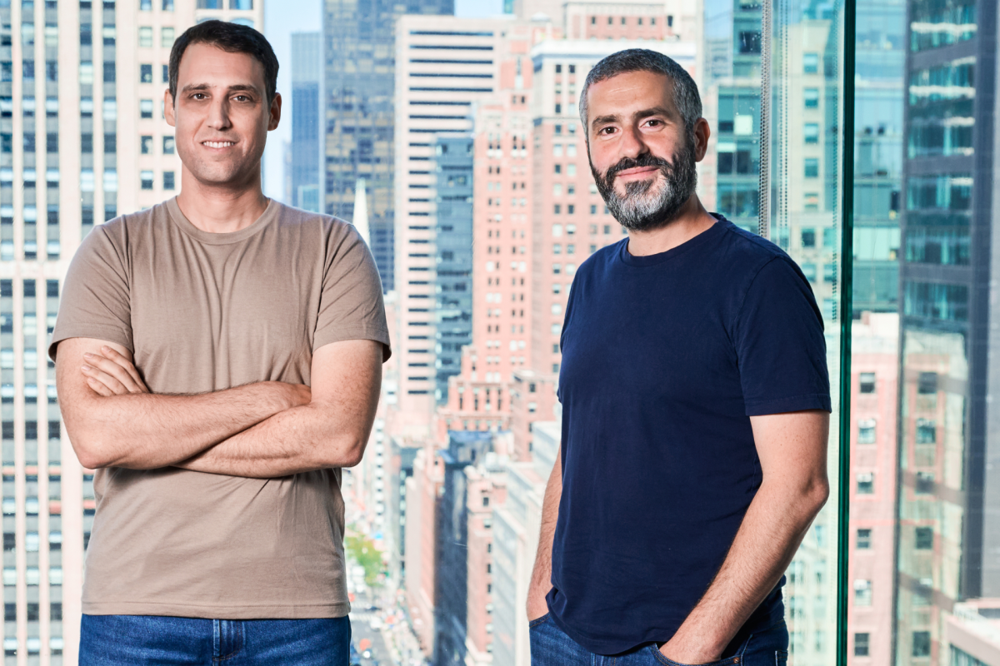

中国创作者视角 • 全球AI前沿 • 每日晨报
Janet's Express Box
2026-06-04 // VOL_247
2026-06-04 // VOL_247
Agent 进厂
AI 从 demo 走向生产线，拼的是数据、监控、安全和账单
早，Janet。今天这期不是模型跑分秀，而是 AI agent 终于开始被企业当生产系统对待：谁给它数据，谁看住它，谁替它付 token 账单，谁在出事后背锅。
📌 今日趋势：Agent 进厂
今天的共同主线很清楚：AI agent 正在从演示视频进入企业生产环境。Microsoft 把 agent 绑进 Work IQ、Foundry 和 Agent 365，Pinecone 把 OneLake 里的企业数据做成可引用的知识接口，Coralogix 则拿到 2 亿美元去盯住这些 agent 出错时到底发生了什么。
这对中国创作者和企业的意思很直接：下一阶段不是“我接了哪个大模型”，而是“我的 agent 能不能安全拿数据、少烧 token、出问题能追责”。只会写 prompt 的团队会被挤到外包层，能做数据权限、监控、成本控制和行业工作流闭环的团队，才是真正能收企业钱的人。
接下来 2 到 4 周要盯三个信号：大厂 agent 平台是否开始收管理费，知识引擎和向量数据库是否从 RAG 变成“agent 操作系统”，以及监管是否继续逼 Google、Meta、Microsoft 这类平台把 AI 输出的引用、权限和事故链摊开。
01 / KEY INTELLIGENCE (全球要闻)
Microsoft Official Blog
Microsoft 把 Agent 推进企业生产线
来源: Microsoft Official Blog · 2026-06-04 · 原文链接
Microsoft 在 Build 2026 发布围绕 Microsoft Agent Platform 的一组能力，把 GitHub、Microsoft Foundry、Copilot Studio、Teams 和 Microsoft 365 的上下文连成企业 agent 工作流。官方博客强调，开发者不只需要构建 agent，还要在模型选择、治理、安全和企业知识之间做平衡。
Janet 锐评：
这条新闻撕开的缺口是：agent 不再只是会聊天的软件，而是要被塞进企业组织结构里干活。门槛也变高了，企业要的不是一个聪明对话框，而是权限、审计、数据源、模型路由和部署边界一起交付。国内做企业 AI 的团队别再卖“智能助手”四个字，先把一个销售、法务或研发场景跑成闭环，再谈平台故事。
TechCrunch
Coralogix 拿下 2 亿美元，赌 Agent 监控
来源: TechCrunch · 2026-06-04 · 原文链接
TechCrunch 报道，软件监控公司 Coralogix 完成 2 亿美元 F 轮融资，投后估值 16 亿美元。公司把增长押在 AI agents 进入生产后的可观测性需求上，称越来越多客户希望通过 AI assistant 或命令行直接查询日志、指标和链路数据。
Janet 锐评：
这不是又一家融资新闻，这是 AI 生产化之后最现实的收钱口。agent 越自治，企业越怕它半夜把流程跑歪，所以监控、告警、溯源和事故复盘会比炫技 demo 更早变现。国内 SaaS 团队可以少做一堆“AI 帮你总结日报”，多做一层 agent 行为日志和异常回放，老板会更愿意付钱。
AP
英国逼 Google 给 AI 搜索标来源
来源: AP · 2026-06-04 · 原文链接
英国竞争与市场管理局要求 Google 为出版商提供退出 AI Search 聚合和摘要的工具，并要求 Google 在 AI 生成搜索结果中清晰标注来源链接。AP 报道称，这是英国使用新数字市场权力对 Google 搜索业务施加的监管要求。
Janet 锐评：
这条新闻说明 AI 搜索的免费午餐开始被人掀桌。Google 以前一边抓内容一边截流，现在监管逼它给出版商一个退出按钮，内容平台终于有了谈判筹码。做公众号、独立站和垂类媒体的创作者别只看流量跌没跌，要开始记录 AI 搜索曝光、引用和点击，未来谈授权和维权靠的是证据，不是情绪。
PRNewswire / Pinecone
Pinecone 把 OneLake 变成 Agent 知识层
来源: PRNewswire / Pinecone · 2026-06-04 · 原文链接
Pinecone 在 Microsoft Build 宣布 Pinecone Nexus 接入 Microsoft OneLake，让企业 agent 可以直接从 Fabric 和 OneLake 中拿到结构化、可引用、受权限约束的知识结果。Pinecone 称 Nexus 可提前组装任务所需的 artifacts，减少 agent 运行时检索和拼接数据的成本。
Janet 锐评：
RAG 的粗糙时代快结束了，企业真正要的是“能被 agent 直接消费的知识层”。难点不在向量检索，而在权限、引用、结构化输出和 token 成本能不能同时压住。国内做知识库的团队别再把卖点停在“支持上传 PDF”，把数据权限、引用溯源和任务级上下文做出来，才有资格进企业采购表。
TechCrunch
Alphabet 850 亿美元继续浇进 AI 基建
来源: TechCrunch · 2026-06-04 · 原文链接
TechCrunch 报道，Alphabet 面向 AI 业务的股票融资规模扩大到 850 亿美元，资金将用于支撑 AI 基础设施和数据中心投入。文章指出，这次发行被投资者大幅超额认购，也为 Anthropic、OpenAI 等 AI 公司未来 IPO 管线释放强信号。
Janet 锐评：
这条新闻的刺点是：AI 基建战争已经不是烧 VC 小钱，而是动用公开市场吸血。普通创业者别幻想靠“同款大模型体验”硬刚巨头，因为算力成本和资本成本已经不是一个量级。更聪明的打法是借巨头基础设施，做行业数据、流程和交付，别把自己活成 GPU 账单的搬运工。
02 / MODEL UPDATES (模型动态)

Microsoft Official Blog
Microsoft 自研推理模型进 Foundry
来源: Microsoft Official Blog · 2026-06-04 · 原文链接
Microsoft AI Superintelligence Team 发布 MAI-Thinking-1，这是 Microsoft AI 首个 reasoning model。官方称该模型从零训练、未做蒸馏，拥有 350 亿 active parameters 和 256K context window，面向多步骤指令、长上下文推理和代码生成，在 Foundry 私有预览开放。
Janet 锐评：
微软终于不满足于只当 OpenAI 的大客户了。自研 reasoning model 的意义不是马上吊打所有模型，而是把 Copilot、Foundry、企业数据和成本控制握回自己手里。国内云厂商也该醒醒了，模型不是面子工程，谁能把推理成本压进企业工作流，谁才有长期议价权。
Microsoft Official Blog
Office 先吃到 Microsoft 图像模型
来源: Microsoft Official Blog · 2026-06-04 · 原文链接
Microsoft 同时发布 MAI-Image-2.5 及其 flash 版本，称这是 Microsoft 首批同时服务 text-to-image 和 image-to-image 工作负载的图像模型。官方称相关能力已进入 PowerPoint、OneDrive，并登陆 Microsoft Foundry。
Janet 锐评：
图像模型被塞进 PowerPoint 和 OneDrive，比单独发一个绘图网站更狠。它瞄准的是企业里每天都在做方案、汇报、素材改版的人，不是 AI 绘画圈的炫技玩家。创作者工具团队要注意，未来竞争不是谁出图更梦幻，而是谁能嵌进真实文档、素材库和审批流程。
Microsoft Official Blog
Copilot 换上 MAI，VS Code 先试水
来源: Microsoft Official Blog · 2026-06-04 · 原文链接
Microsoft 宣布 MAI-Code-1 已进入 Copilot 和 VS Code，定位为面向 GitHub 场景调优的高效 coding model。官方把它列入 MAI 模型家族，和 reasoning、image、speech、voice 模型一起放进 Foundry 和开发者平台。
Janet 锐评：
这一步的意思很直接：代码助手的核心模型不能永远租别人的。微软把自家 coding model 放进 Copilot，是为了掌握成本、延迟和产品节奏，而不是等外部模型排期。国内 IDE、低代码和 DevOps 团队也一样，别只套 API，至少要有自己的路由、评测和降级策略，否则涨价一次就被掐脖子。

NVIDIA Investor Relations
Nemotron 变小，长任务 Agent 才有账算
来源: NVIDIA Investor Relations · 2026-06-04 · 原文链接
NVIDIA 在 GTC Taipei / Computex 期间公布面向企业 agent 的软件、开源模型和生态合作，其中包括 Nemotron 3 Ultra。NVIDIA 称该模型更小、更快，面向长运行 agent 任务，可带来更快推理和更低复杂 agent 任务成本。
Janet 锐评：
模型战正在从“参数越大越吓人”转向“任务越长越省钱”。长运行 agent 的瓶颈不是一次回答多聪明，而是几十步工具调用下来别慢、别贵、别崩。国内团队如果做自动化 agent，别盲目追最大模型，先把任务拆分、模型路由和失败重试做好，小模型反而可能是赚钱入口。
03 / TECH INSIGHTS (技术深度)
Microsoft Official Blog
企业上下文成了 Microsoft 的护城河
来源: Microsoft Official Blog · 2026-06-04 · 原文链接
Microsoft 在 Build 中重点推出 Microsoft IQ 体系：Work IQ 连接 Microsoft 365、组织系统和外部来源，Fabric IQ 提供结构化业务数据语义基础，Foundry IQ 负责跨企业知识和实时 web 的检索规划。官方称这些能力是让 agent 真正理解企业语境的基础。
Janet 锐评：
企业 AI 的护城河不是模型，而是上下文。没有邮件、会议、文档、表格、权限和业务语义，agent 再聪明也只能在空气里表演。真正麻烦的是实施周期会变长，脏数据和权限表会先把团队打回原形。国内企业服务团队要少说“接入全网知识”，多问客户哪三类内部数据最值钱，先把那三类数据做成可控上下文，订单才会落地。
PRNewswire / Pinecone
Pinecone 开始把 RAG 卖成安全层
来源: PRNewswire / Pinecone · 2026-06-04 · 原文链接
Pinecone Nexus 与 OneLake 的集成强调 RBAC、ABAC、PII 标记和版本化 artifacts。每个 agent 查询都围绕具体任务生成有引用的结构化结果，并按用户权限返回，而不是让 agent 在运行时盲目翻数据湖。
Janet 锐评：
这就是企业 RAG 最难卖但最该卖的部分：权限。没有权限边界的知识库只是一个漂亮的数据泄漏装置，客户越大越不敢用。真正的成本不在向量库，而在权限继承、PII 标记和审计链路。做行业方案的人要把“谁能看什么、引用来自哪里、PII 怎么处理”写进产品默认能力，这比多接一个模型更有价值。
Microsoft Official Blog
Microsoft Agent 365 给企业代理戴工牌
来源: Microsoft Official Blog · 2026-06-04 · 原文链接
Microsoft 宣布 Agent 365 for local agents，把 Entra、Defender 和 Purview 扩展为观察、治理和保护 agent 的控制平面，覆盖不同托管环境和框架。官方把它描述为让企业在保持控制的同时快速构建 agent 的安全层。
Janet 锐评：
agent 一旦能跨应用执行任务，就必须被当成一个新员工来管。问题不是它会不会犯错，而是犯错时谁知道、谁审批、谁能停掉它。国内企业如果要上 agent，先设计权限、日志、审批和 kill switch，再谈自动化率，否则省下一个人力，换来一个审计黑洞。
TechCrunch
Google AI 搜索指标把流量变账单
来源: TechCrunch · 2026-06-04 · 原文链接
英国 CMA 要求 Google 让出版商控制内容是否进入 AI Search，并要求 Google 清晰归因。TechCrunch 报道称，Google 将在 Search Console 中提供新的控制和指标，让出版商看到其内容在 AI Overviews、AI Mode 等功能中的曝光。
Janet 锐评：
AI 搜索正在把传统 SEO 改成一张结算账单。以前创作者只看排名和点击，现在还要看被 AI 摘了多少、引用了多少、到底有没有流量回来。最狠的地方是平台可能替你完成回答，却不把用户还给你。内容型账号和媒体网站要开始做 AI 引用监控，不然平台拿你的内容训练和回答，你连损失在哪里都说不清。
04 / INVESTMENT & PREDICTION (投资视角/大胆预测)
今日核心预测
TechCrunch
Alphabet 的 AI 数据中心还要继续烧钱
来源: TechCrunch · 2026-06-04 · 原文链接
Alphabet 的 850 亿美元融资显示，AI 基础设施已经进入公开市场大规模补血阶段。TechCrunch 指出，Alphabet 计划把资金用于 AI 机会和企业、消费者需求背后的基础设施投入。
Janet 锐评：
这对投资视角最关键：AI 不再只是模型公司融资，而是云、芯片、数据中心和电力系统一起抽走市场资金。中小公司如果没有明确现金流，别跟着讲“我要自建算力”这种梦话。更现实的机会在 AI 基建的下游工具层，帮客户省 token、省人力、省排错时间。

TechCrunch
Coralogix 这轮融资买的是观测层未来
来源: TechCrunch · 2026-06-04 · 原文链接
Coralogix 的融资表明投资者正在押注 AI agent 生产化之后的监控和可观测性市场。公司称会把资金用于 AI 产品、安全业务和全球扩张，其客户已经越来越多通过 agent 或命令行查询运营数据。
Janet 锐评：
投资上真正好看的不是“又一个 agent 应用”，而是所有 agent 应用都绕不开的底层账本。谁能记录 agent 干了什么、为什么失败、花了多少钱，谁就站在企业预算入口。国内创业者如果找不到方向，别挤通用助手，去做 agent observability、成本审计和事故复盘。
PRNewswire / Pinecone
OneLake 接上 Nexus，知识库身价变了
来源: PRNewswire / Pinecone · 2026-06-04 · 原文链接
Pinecone 称 Nexus 与 OneLake 集成可以减少 frontier LLM token 使用、提升任务执行速度，并让 agent 直接消费结构化、带引用的 artifacts。这意味着向量数据库和知识引擎正在从基础组件变成 agent 成本控制层。
Janet 锐评：
投资逻辑很简单：当 agent 执行链变长，检索成本就会从小数点变成账单大头。能提前压缩、结构化、引用化企业知识的公司，会比单纯卖向量存储更值钱。国内知识库厂商如果还在拼 embedding 维度，已经偏题了，下一轮估值看的是能不能替客户少烧模型调用费。
05 / CREATOR TOOLBOX (创作者工具箱)
Janet的快车箱 · AI科技晨报 · 2026-06-04 版